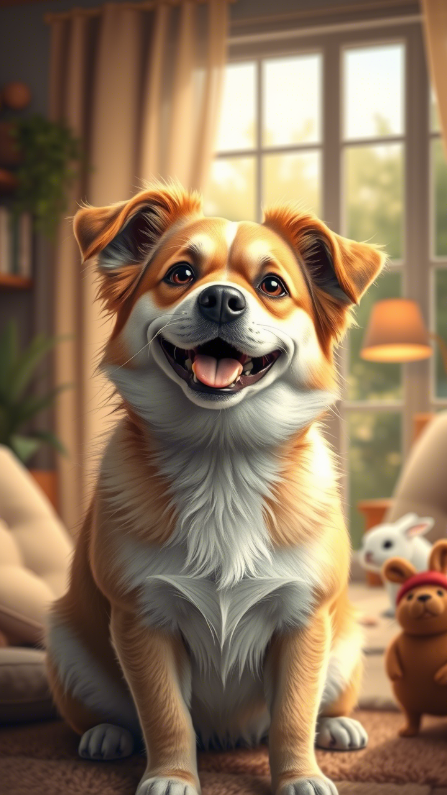

Sobre este Proyecto
Este proyecto utiliza CSS avanzado para crear un efecto 3D interactivo:
-
Efectos 3D: Se usa
perspectiveytransform-style: preserve-3dpara simular profundidad. -
Interactividad: La pseudoclase
:has()y combinadores como+permiten aplicar estilos basados en relaciones entre elementos. -
Animaciones: Transiciones suaves
(
transition) y cambios de brillo (filter) mejoran la experiencia del usuario.
Al pasar el cursor sobre una imagen, esta se desplaza hacia adelante
con translateZ, mientras que las imágenes cercanas
responden con rotaciones y cambios de brillo. Este diseño combina
técnicas modernas de CSS para lograr un efecto visual dinámico y
atractivo.
Usando.item:has(+ .item:hover)selecciona un<div class="item">si el siguiente<div class="item">está siendo hovereado. Esto permite que los elementos previos al hover también responden visualmente.